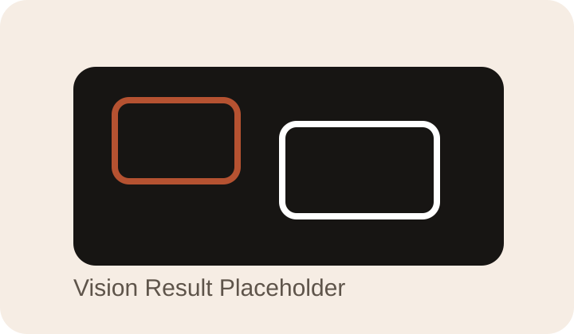

主导视觉能力全流程重构，利用 Roboflow 建立数据集，负责 YOLO11 模型训练并覆盖车牌、红绿灯、交通标志、二维码、颜色、TFT 屏幕检测、行人等 10 余种识别对象。
AI / Android
嵌入式小车移动控制平台
这是一个结合视觉识别、Android 控制端和多传感器输入的智能小车平台项目。 它的重点不只是“模型跑起来”，而是让识别能力、跨节点通信和终端交互一起稳定工作。

项目背景
项目目标是让移动控制端、视觉识别模型和小车感知链路协同工作，形成一个可视化、可操作的智能控制平台。 它既涉及模型训练，也涉及移动端性能调优、终端呈现和跨节点硬件通信，因此对完整链路的理解要求比较高。
我的职责
负责 Android 端底层数据接口维护、视频流与多路传感器信号接收解析，并重构客户端 UI，优化信息面板与实时画框交互。
技术与实现
- 基于 YOLO11 训练多个识别模型，并通过持续迭代训练集与参数微调将综合识别准确率提升至 90% 以上。
- 通过 Roboflow 处理数据清洗、分类与标注流程，同时结合终端性能调整模型输入分辨率与置信度阈值。
- 依托跨节点硬件通信架构，在 Android 端稳定接收解析视频流与多路传感器数据，确保协同指令准确下发。
- 维护底层 Java 代码并重构冗余逻辑，优化实时画框与高密度信息面板的阅读效率。
图片展示

结果与复盘
这个项目让我积累了从模型训练、数据集构建到终端接入和交互优化的完整链路经验，并在识别准确率和实时体验层面完成了明确提升。 它比单纯做一个识别 demo 更完整，因为它要求识别结果真正进入“可操作的产品界面”和“稳定可用的通信链路”。